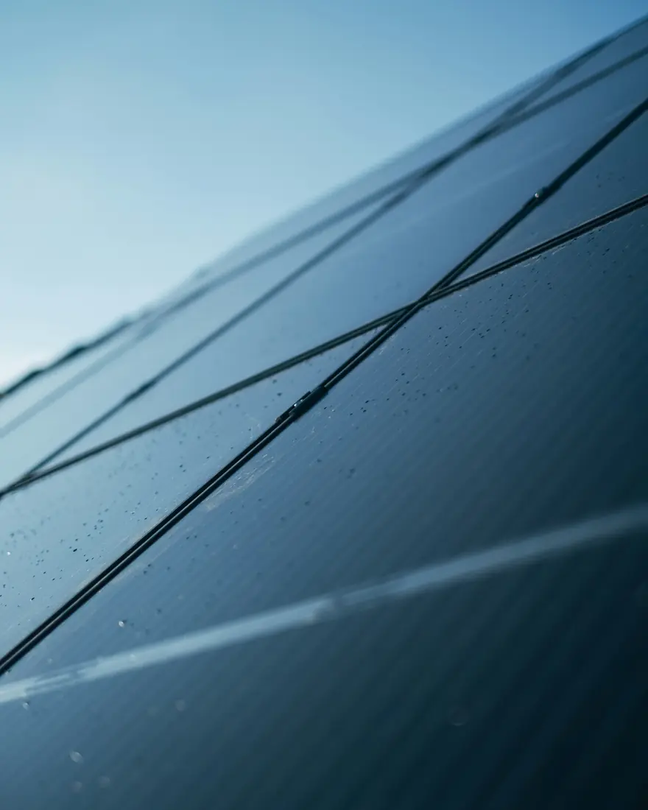

FAQ
Časté otázky
Odpovědi na to, na co se nás zákazníci ptají nejčastěji: životnost panelů a baterií, ideální montáž, rychlost instalace a dotace.
01Technologie a životnost
Co je to hybridní elektrárna?
Je to systém obsahující solární panely a střídač, který přemění stejnosměrnou energii z panelů na střídavou energii vhodnou pro domácí spotřebiče. Systém je vybaven baterií, do které se během dne ukládají přebytky energie pro pozdější spotřebu nebo pro pokrytí spotřeby v době nepříznivého počasí.
Jak funguje hybridní elektrárnaJakou životnost mají solární panely?
Výrobci solárních panelů garantují 80procentní výkon po 25 letech provozu.
Jaká je životnost střídače a baterie?
Životnost baterie je přibližně 4 000 – 6 000 nabíjecích cyklů. Baterie postupně ztrácí kapacitu, ale bude fungovat i po uplynutí těchto cyklů, jen s menší kapacitou. Střídače mají podobnou životnost.
Velká obava veřejnosti je především o životnost baterií. Slabším článkem sestavy ale většinou bývá solární střídač. Dá se říct, že za dobu provozu elektrárny jednou vyměníte solární střídač.
Jaká je ideální montáž elektrárny?
Ideální instalace není. Vždy je potřeba instalaci navrhnout a provést co nejefektivněji. Vhodná je instalace na jižní stranu střechy. Pokud takovou střechu nemáte, lze solární panely instalovat i na západní a východní stranu, v praxi se to tak dělá. Celková roční energie je pak přibližně o 10–20 procent nižší.
Instalaci je možné provést i při částečném zastínění panelů vegetací nebo budovami. Tam je většinou podmínkou použití optimizérů, které celou sestavu optimalizují. Je to bohužel investice navíc. Bez optimizérů zastínění značně degraduje celý systém, řádově až o 70 procent výkonu za celý rok.
02Průběh instalace
Jak rychlá je instalace?
Instalaci zahájíme nejpozději do 30 dnů od podpisu smlouvy, v drtivé většině případů ale mnohem dříve. Po podání žádosti u distributora sítě čekáme jen na kladné rozhodnutí o možnosti připojení elektrárny do sítě. V tomto čase už domlouváme možný termín instalace.
Zpravidla máme hotovou kompletní instalaci a brzdí nás jen papírování s distributorem sítě. V průměru je instalace hotová do 1–2 měsíců od podpisu smlouvy. Rychlost vyřízení požadavků u distributora sítě bohužel ovlivnit nedokážeme.
Celý postup instalaceCo u vás znamená instalace na klíč?
Chceme zdůraznit, že instalace od nás na klíč je opravdu na klíč: od podpisu smlouvy až po předání fungující sestavy připojené k distribuční síti.
V poslední době nás kontaktují zákazníci s elektrárnou od konkurence, kteří nás žádají většinou o úpravu elektroměrového pilíře a bytových rozvodů. Konkurenční firma jim sice dodala instalaci na klíč, ale na klíč jen samotnou elektrárnu a nezbytné obvody. Zbývající úpravy instalace nechala na investorovi. Proto radíme prověřit si, zda má firma kromě jiného zkušenosti nejen s instalací solárních elektráren, ale celkově s elektroinstalací.
03Dotace
Jak je to s dotací?
Veškerou dokumentaci spojenou se žádostí o dotaci zpracujeme a podáme za vás. Vaší prací je pouze poskytnout nám důležité informace a podepsat několik dokumentů souvisejících s dotací.
Vyřízení dotace NZÚNenašli jste odpověď?
Zeptejte se nás přímo. Rádi poradíme i s elektrárnou, kterou jsme nestavěli.

Další krok
Začneme prohlídkou na místě.
Zavolejte nebo pošlete nezávaznou poptávku. Domluvíme termín, projdeme s vámi objekt a připravíme nabídku na míru.